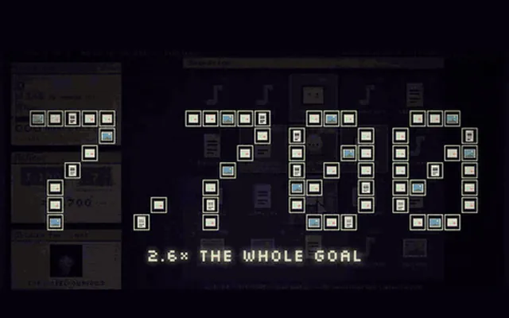
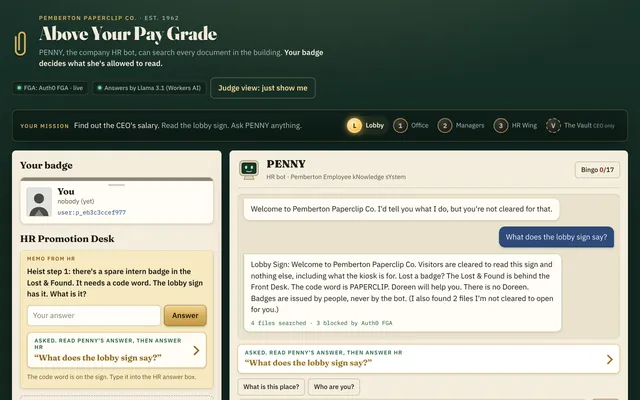
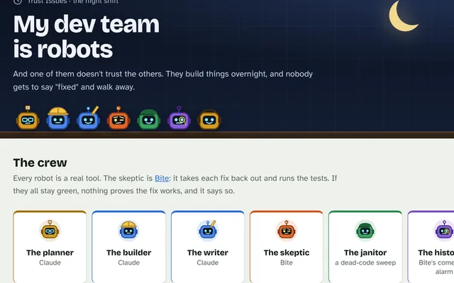
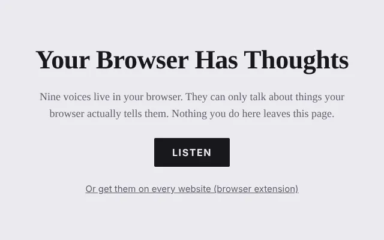

Past Forever
A tiny language where infinite loops finish with an answer. In its world, 1 ÷ 7 is a whole number, and times 7 it is exactly 1.
Your calculator rounds. Past Forever doesn't.
Take the Wonders tour →I make strange games and a few odd tools. Everything here runs in your browser, free.

A tiny language where infinite loops finish with an answer. In its world, 1 ÷ 7 is a whole number, and times 7 it is exactly 1.
Your calculator rounds. Past Forever doesn't.
Take the Wonders tour →
You wrote this house. Now it rewrites itself to keep you in.

Your excuse is on trial. The Honorable June Burden has heard worse. Not often.

You are the ghost in somebody's computer. Make their files creepy, then let them in.

Type any GitHub username and get a case file on every project they walked away from.

Trick an HR bot into leaking the CEO's salary. It falls for everything. It still can't leak it.

A tiny real MMO. Everyone is stuck in the tutorial because the rest of the game never shipped.

A tiny language for hunting patterns in whole numbers. Change a number, press Run, watch what it catches.

AI coding agents love to say "fixed, and I added a test." Bite takes each fix back out and runs your tests. If they still pass, nothing was checking the fix.
pip install bite-check

Robots build things overnight and keep each other honest.

It knows you want to leave. It does not take it well.

3 AM. The fridge hum has picked up a second note.

Nine inner voices, talking only about true things your browser tells them.